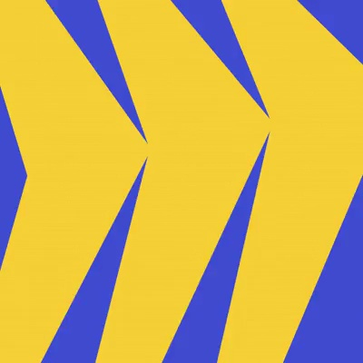
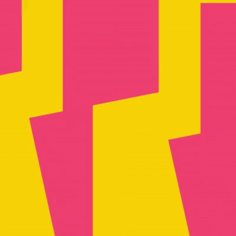
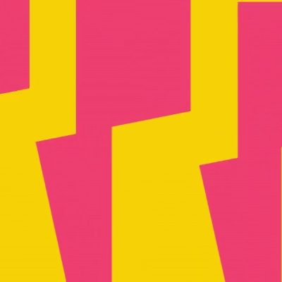
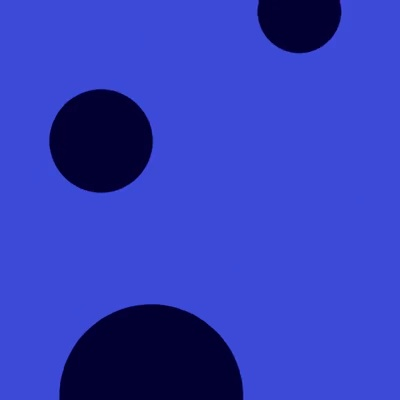

Miro / V350
几何图案循环 · 10.0 秒
四组满幅几何纹样依次变化：折角的硬节奏转为柔软波浪，再落到不同大小的圆点。
构图与编排 可播放 · 可替换内容
整体编排规则示例
查看 HTML 源码
<!doctype html><html lang="zh-CN"><meta charset="utf-8"><meta name="viewport" content="width=device-width,initial-scale=1"><title>几何图案循环 · 10.0 秒 · sequence</title><style>html,body{margin:0;width:100%;height:100%;overflow:hidden;background:#fbdc20}canvas{display:block;width:100%;height:100%;object-fit:contain}</style><body data-mode="sequence"><canvas width="1000" height="600"></canvas><script src="data.js"></script><script src="common.js"></script><script src="scene.js"></script><script src="bridge.js"></script></body></html>画面元素折角条带错位块波浪边界圆点
MOTION LANGUAGE
动作与构图
局部动作 · 构图规则
01
让相邻条带共享节拍
让相邻条带共享节拍规则示例
查看 HTML 源码
<!doctype html><html lang="zh-CN"><meta charset="utf-8"><meta name="viewport" content="width=device-width,initial-scale=1"><title>几何图案循环 · 10.0 秒 · sequence</title><style>html,body{margin:0;width:100%;height:100%;overflow:hidden;background:#fbdc20}canvas{display:block;width:100%;height:100%;object-fit:contain}</style><body data-mode="clip" data-start="0" data-end="2.5"><canvas width="1000" height="600"></canvas><script src="data.js"></script><script src="common.js"></script><script src="scene.js"></script><script src="bridge.js"></script></body></html>同类形状用固定间距重复，折点上下移动时相邻条带保持对应。图案超出画幅边缘，避免出现外框。
02
每组只用两个颜色
黄蓝、黄红、深浅粉、深浅蓝分别成组。切换时同时更换形状族与色组，组内则只做形变和位移，保持整体性。
03
形状节奏由硬转软
折块使用短促错位；波浪用连续起伏；圆点以不同半径穿过画面。新品牌可替换色板，但保留每组形状的动作特性和满幅密度。
SEQUENCE
段落与节奏
点击段落，定位到上方编排示意。




画面参考 · 离散静帧
KEEP THE RELATIONSHIPS
制作其他主题
- 替换双色组合；保留条带、折块、波浪、圆点四种运动族。
制作约束
折角条带 / 错位块 / 波浪边界 / 圆点
- 同类形状用固定间距重复，折点上下移动时相邻条带保持对应。图案超出画幅边缘，避免出现外框。
- 黄蓝、黄红、深浅粉、深浅蓝分别成组。切换时同时更换形状族与色组，组内则只做形变和位移，保持整体性。
- 折块使用短促错位；波浪用连续起伏；圆点以不同半径穿过画面。新品牌可替换色板，但保留每组形状的动作特性和满幅密度。